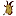

<!doctype html>
<html lang="en">
    <head>
        <meta charset="utf-8">
        <meta http-equiv="X-UA-Compatible" content="IE=edge">
        <meta name="viewport" content="initial-scale=1,user-scalable=no,maximum-scale=1,width=device-width">
        <meta name="mobile-web-app-capable" content="yes">
        <meta name="apple-mobile-web-app-capable" content="yes">
        <link rel="stylesheet" href="css/leaflet.css">
        <link rel="stylesheet" href="css/qgis2web.css"><link rel="stylesheet" href="css/fontawesome-all.min.css">
        <link rel="stylesheet" href="css/leaflet-measure.css">
        <style>
        html, body, #map {
            width: 100%;
            height: 100%;
            padding: 0;
            margin: 0;
        }
        </style>
        <title></title>
    </head>
    <body>
        <div id="map">
        </div>
        <script src="js/qgis2web_expressions.js"></script>
        <script src="js/leaflet.js"></script>
        <script src="js/leaflet.rotatedMarker.js"></script>
        <script src="js/leaflet.pattern.js"></script>
        <script src="js/leaflet-hash.js"></script>
        <script src="js/Autolinker.min.js"></script>
        <script src="js/rbush.min.js"></script>
        <script src="js/labelgun.min.js"></script>
        <script src="js/labels.js"></script>
        <script src="js/leaflet-measure.js"></script>
        <script src="data/BatasDesaPegundungan_1.js"></script>
        <script src="data/Jalan_2.js"></script>
        <script src="data/PeternakanTaniBangkit_3.js"></script>
        <script src="data/PeternakanSariTani_4.js"></script>
        <script src="data/BalaiDesa_5.js"></script>
        <script>
        var map = L.map('map', {
            zoomControl:true, maxZoom:28, minZoom:1
        }).fitBounds([[-7.261326499246551,109.8124846516234],[-7.251102803485036,109.83307786929213]]);
        var hash = new L.Hash(map);
        map.attributionControl.setPrefix('<a href="https://github.com/tomchadwin/qgis2web" target="_blank">qgis2web</a> &middot; <a href="https://leafletjs.com" title="A JS library for interactive maps">Leaflet</a> &middot; <a href="https://qgis.org">QGIS</a>');
        var autolinker = new Autolinker({truncate: {length: 30, location: 'smart'}});
        var measureControl = new L.Control.Measure({
            position: 'topleft',
            primaryLengthUnit: 'meters',
            secondaryLengthUnit: 'kilometers',
            primaryAreaUnit: 'sqmeters',
            secondaryAreaUnit: 'hectares'
        });
        measureControl.addTo(map);
        document.getElementsByClassName('leaflet-control-measure-toggle')[0]
        .innerHTML = '';
        document.getElementsByClassName('leaflet-control-measure-toggle')[0]
        .className += ' fas fa-ruler';
        var bounds_group = new L.featureGroup([]);
        function setBounds() {
        }
        map.createPane('pane_Basemap_0');
        map.getPane('pane_Basemap_0').style.zIndex = 400;
        var layer_Basemap_0 = L.tileLayer('http://mt0.google.com/vt/lyrs=s&hl=en&x={x}&y={y}&z={z}', {
            pane: 'pane_Basemap_0',
            opacity: 1.0,
            attribution: '',
            minZoom: 1,
            maxZoom: 28,
            minNativeZoom: 0,
            maxNativeZoom: 18
        });
        layer_Basemap_0;
        map.addLayer(layer_Basemap_0);
        function pop_BatasDesaPegundungan_1(feature, layer) {
            var popupContent = '<table>\
                    <tr>\
                        <td colspan="2">' + (feature.properties['OBJECTID'] !== null ? autolinker.link(feature.properties['OBJECTID'].toLocaleString()) : '') + '</td>\
                    </tr>\
                    <tr>\
                        <td colspan="2">' + (feature.properties['Id'] !== null ? autolinker.link(feature.properties['Id'].toLocaleString()) : '') + '</td>\
                    </tr>\
                    <tr>\
                        <td colspan="2">' + (feature.properties['Shape_Leng'] !== null ? autolinker.link(feature.properties['Shape_Leng'].toLocaleString()) : '') + '</td>\
                    </tr>\
                    <tr>\
                        <td colspan="2">' + (feature.properties['Shape_Area'] !== null ? autolinker.link(feature.properties['Shape_Area'].toLocaleString()) : '') + '</td>\
                    </tr>\
                </table>';
            layer.bindPopup(popupContent, {maxHeight: 400});
        }

        function style_BatasDesaPegundungan_1_0() {
            return {
                pane: 'pane_BatasDesaPegundungan_1',
                opacity: 1,
                color: 'rgba(0,0,0,1.0)',
                dashArray: '',
                lineCap: 'square',
                lineJoin: 'bevel',
                weight: 4.0,
                fillOpacity: 0,
                interactive: false,
            }
        }
        map.createPane('pane_BatasDesaPegundungan_1');
        map.getPane('pane_BatasDesaPegundungan_1').style.zIndex = 401;
        map.getPane('pane_BatasDesaPegundungan_1').style['mix-blend-mode'] = 'normal';
        var layer_BatasDesaPegundungan_1 = new L.geoJson(json_BatasDesaPegundungan_1, {
            attribution: '',
            interactive: false,
            dataVar: 'json_BatasDesaPegundungan_1',
            layerName: 'layer_BatasDesaPegundungan_1',
            pane: 'pane_BatasDesaPegundungan_1',
            onEachFeature: pop_BatasDesaPegundungan_1,
            style: style_BatasDesaPegundungan_1_0,
        });
        bounds_group.addLayer(layer_BatasDesaPegundungan_1);
        map.addLayer(layer_BatasDesaPegundungan_1);
        function pop_Jalan_2(feature, layer) {
            var popupContent = '<table>\
                    <tr>\
                        <td colspan="2">' + (feature.properties['NAMRJL'] !== null ? autolinker.link(feature.properties['NAMRJL'].toLocaleString()) : '') + '</td>\
                    </tr>\
                    <tr>\
                        <td colspan="2">' + (feature.properties['KONRJL'] !== null ? autolinker.link(feature.properties['KONRJL'].toLocaleString()) : '') + '</td>\
                    </tr>\
                    <tr>\
                        <td colspan="2">' + (feature.properties['MATRJL'] !== null ? autolinker.link(feature.properties['MATRJL'].toLocaleString()) : '') + '</td>\
                    </tr>\
                    <tr>\
                        <td colspan="2">' + (feature.properties['FGSRJL'] !== null ? autolinker.link(feature.properties['FGSRJL'].toLocaleString()) : '') + '</td>\
                    </tr>\
                    <tr>\
                        <td colspan="2">' + (feature.properties['UTKRJL'] !== null ? autolinker.link(feature.properties['UTKRJL'].toLocaleString()) : '') + '</td>\
                    </tr>\
                    <tr>\
                        <td colspan="2">' + (feature.properties['TOLRJL'] !== null ? autolinker.link(feature.properties['TOLRJL'].toLocaleString()) : '') + '</td>\
                    </tr>\
                    <tr>\
                        <td colspan="2">' + (feature.properties['WLYRJL'] !== null ? autolinker.link(feature.properties['WLYRJL'].toLocaleString()) : '') + '</td>\
                    </tr>\
                    <tr>\
                        <td colspan="2">' + (feature.properties['AUTRJL'] !== null ? autolinker.link(feature.properties['AUTRJL'].toLocaleString()) : '') + '</td>\
                    </tr>\
                    <tr>\
                        <td colspan="2">' + (feature.properties['KLSRJL'] !== null ? autolinker.link(feature.properties['KLSRJL'].toLocaleString()) : '') + '</td>\
                    </tr>\
                    <tr>\
                        <td colspan="2">' + (feature.properties['SPCRJL'] !== null ? autolinker.link(feature.properties['SPCRJL'].toLocaleString()) : '') + '</td>\
                    </tr>\
                    <tr>\
                        <td colspan="2">' + (feature.properties['JPARJL'] !== null ? autolinker.link(feature.properties['JPARJL'].toLocaleString()) : '') + '</td>\
                    </tr>\
                    <tr>\
                        <td colspan="2">' + (feature.properties['ARHRJL'] !== null ? autolinker.link(feature.properties['ARHRJL'].toLocaleString()) : '') + '</td>\
                    </tr>\
                    <tr>\
                        <td colspan="2">' + (feature.properties['STARJL'] !== null ? autolinker.link(feature.properties['STARJL'].toLocaleString()) : '') + '</td>\
                    </tr>\
                    <tr>\
                        <td colspan="2">' + (feature.properties['KLLRJL'] !== null ? autolinker.link(feature.properties['KLLRJL'].toLocaleString()) : '') + '</td>\
                    </tr>\
                    <tr>\
                        <td colspan="2">' + (feature.properties['MEDRJL'] !== null ? autolinker.link(feature.properties['MEDRJL'].toLocaleString()) : '') + '</td>\
                    </tr>\
                    <tr>\
                        <td colspan="2">' + (feature.properties['LOCRJL'] !== null ? autolinker.link(feature.properties['LOCRJL'].toLocaleString()) : '') + '</td>\
                    </tr>\
                    <tr>\
                        <td colspan="2">' + (feature.properties['JARRJL'] !== null ? autolinker.link(feature.properties['JARRJL'].toLocaleString()) : '') + '</td>\
                    </tr>\
                    <tr>\
                        <td colspan="2">' + (feature.properties['FCODE'] !== null ? autolinker.link(feature.properties['FCODE'].toLocaleString()) : '') + '</td>\
                    </tr>\
                    <tr>\
                        <td colspan="2">' + (feature.properties['REMARK'] !== null ? autolinker.link(feature.properties['REMARK'].toLocaleString()) : '') + '</td>\
                    </tr>\
                    <tr>\
                        <td colspan="2">' + (feature.properties['SRS_ID'] !== null ? autolinker.link(feature.properties['SRS_ID'].toLocaleString()) : '') + '</td>\
                    </tr>\
                    <tr>\
                        <td colspan="2">' + (feature.properties['LCODE'] !== null ? autolinker.link(feature.properties['LCODE'].toLocaleString()) : '') + '</td>\
                    </tr>\
                    <tr>\
                        <td colspan="2">' + (feature.properties['METADATA'] !== null ? autolinker.link(feature.properties['METADATA'].toLocaleString()) : '') + '</td>\
                    </tr>\
                    <tr>\
                        <td colspan="2">' + (feature.properties['SHAPE_Leng'] !== null ? autolinker.link(feature.properties['SHAPE_Leng'].toLocaleString()) : '') + '</td>\
                    </tr>\
                </table>';
            layer.bindPopup(popupContent, {maxHeight: 400});
        }

        function style_Jalan_2_0() {
            return {
                pane: 'pane_Jalan_2',
                opacity: 1,
                color: 'rgba(252,237,29,1.0)',
                dashArray: '',
                lineCap: 'square',
                lineJoin: 'bevel',
                weight: 1.0,
                fillOpacity: 0,
                interactive: false,
            }
        }
        map.createPane('pane_Jalan_2');
        map.getPane('pane_Jalan_2').style.zIndex = 402;
        map.getPane('pane_Jalan_2').style['mix-blend-mode'] = 'normal';
        var layer_Jalan_2 = new L.geoJson(json_Jalan_2, {
            attribution: '',
            interactive: false,
            dataVar: 'json_Jalan_2',
            layerName: 'layer_Jalan_2',
            pane: 'pane_Jalan_2',
            onEachFeature: pop_Jalan_2,
            style: style_Jalan_2_0,
        });
        bounds_group.addLayer(layer_Jalan_2);
        map.addLayer(layer_Jalan_2);
        function pop_PeternakanTaniBangkit_3(feature, layer) {
            var popupContent = '<table>\
                    <tr>\
                        <td colspan="2">' + (feature.properties['ket'] !== null ? autolinker.link(feature.properties['ket'].toLocaleString()) : '') + '</td>\
                    </tr>\
                </table>';
            layer.bindPopup(popupContent, {maxHeight: 400});
        }

        function style_PeternakanTaniBangkit_3_0() {
            return {
                pane: 'pane_PeternakanTaniBangkit_3',
        rotationAngle: 0.0,
        rotationOrigin: 'center center',
        icon: L.icon({
            iconUrl: 'markers/ternak.png',
            iconSize: [22.799999999999997, 22.799999999999997]
        }),
                interactive: true,
            }
        }
        map.createPane('pane_PeternakanTaniBangkit_3');
        map.getPane('pane_PeternakanTaniBangkit_3').style.zIndex = 403;
        map.getPane('pane_PeternakanTaniBangkit_3').style['mix-blend-mode'] = 'normal';
        var layer_PeternakanTaniBangkit_3 = new L.geoJson(json_PeternakanTaniBangkit_3, {
            attribution: '',
            interactive: true,
            dataVar: 'json_PeternakanTaniBangkit_3',
            layerName: 'layer_PeternakanTaniBangkit_3',
            pane: 'pane_PeternakanTaniBangkit_3',
            onEachFeature: pop_PeternakanTaniBangkit_3,
            pointToLayer: function (feature, latlng) {
                var context = {
                    feature: feature,
                    variables: {}
                };
                return L.marker(latlng, style_PeternakanTaniBangkit_3_0(feature));
            },
        });
        bounds_group.addLayer(layer_PeternakanTaniBangkit_3);
        map.addLayer(layer_PeternakanTaniBangkit_3);
        function pop_PeternakanSariTani_4(feature, layer) {
            var popupContent = '<table>\
                    <tr>\
                        <td colspan="2">' + (feature.properties['ket'] !== null ? autolinker.link(feature.properties['ket'].toLocaleString()) : '') + '</td>\
                    </tr>\
                </table>';
            layer.bindPopup(popupContent, {maxHeight: 400});
        }

        function style_PeternakanSariTani_4_0() {
            return {
                pane: 'pane_PeternakanSariTani_4',
        rotationAngle: 0.0,
        rotationOrigin: 'center center',
        icon: L.icon({
            iconUrl: 'markers/ternak.png',
            iconSize: [22.799999999999997, 22.799999999999997]
        }),
                interactive: true,
            }
        }
        map.createPane('pane_PeternakanSariTani_4');
        map.getPane('pane_PeternakanSariTani_4').style.zIndex = 404;
        map.getPane('pane_PeternakanSariTani_4').style['mix-blend-mode'] = 'normal';
        var layer_PeternakanSariTani_4 = new L.geoJson(json_PeternakanSariTani_4, {
            attribution: '',
            interactive: true,
            dataVar: 'json_PeternakanSariTani_4',
            layerName: 'layer_PeternakanSariTani_4',
            pane: 'pane_PeternakanSariTani_4',
            onEachFeature: pop_PeternakanSariTani_4,
            pointToLayer: function (feature, latlng) {
                var context = {
                    feature: feature,
                    variables: {}
                };
                return L.marker(latlng, style_PeternakanSariTani_4_0(feature));
            },
        });
        bounds_group.addLayer(layer_PeternakanSariTani_4);
        map.addLayer(layer_PeternakanSariTani_4);
        function pop_BalaiDesa_5(feature, layer) {
            var popupContent = '<table>\
                    <tr>\
                        <td colspan="2">' + (feature.properties['ket'] !== null ? autolinker.link(feature.properties['ket'].toLocaleString()) : '') + '</td>\
                    </tr>\
                </table>';
            layer.bindPopup(popupContent, {maxHeight: 400});
        }

        function style_BalaiDesa_5_0() {
            return {
                pane: 'pane_BalaiDesa_5',
        rotationAngle: 0.0,
        rotationOrigin: 'center center',
        icon: L.icon({
            iconUrl: 'markers/tourist_monument.svg',
            iconSize: [22.799999999999997, 22.799999999999997]
        }),
                interactive: true,
            }
        }
        map.createPane('pane_BalaiDesa_5');
        map.getPane('pane_BalaiDesa_5').style.zIndex = 405;
        map.getPane('pane_BalaiDesa_5').style['mix-blend-mode'] = 'normal';
        var layer_BalaiDesa_5 = new L.geoJson(json_BalaiDesa_5, {
            attribution: '',
            interactive: true,
            dataVar: 'json_BalaiDesa_5',
            layerName: 'layer_BalaiDesa_5',
            pane: 'pane_BalaiDesa_5',
            onEachFeature: pop_BalaiDesa_5,
            pointToLayer: function (feature, latlng) {
                var context = {
                    feature: feature,
                    variables: {}
                };
                return L.marker(latlng, style_BalaiDesa_5_0(feature));
            },
        });
        bounds_group.addLayer(layer_BalaiDesa_5);
        map.addLayer(layer_BalaiDesa_5);
        var baseMaps = {};
        L.control.layers(baseMaps,{' Balai Desa': layer_BalaiDesa_5,' Peternakan Sari Tani': layer_PeternakanSariTani_4,' Peternakan Tani Bangkit': layer_PeternakanTaniBangkit_3,' Jalan': layer_Jalan_2,' Batas Desa Pegundungan': layer_BatasDesaPegundungan_1,"Basemap": layer_Basemap_0,}).addTo(map);
        setBounds();
        </script>
    </body>
</html>
